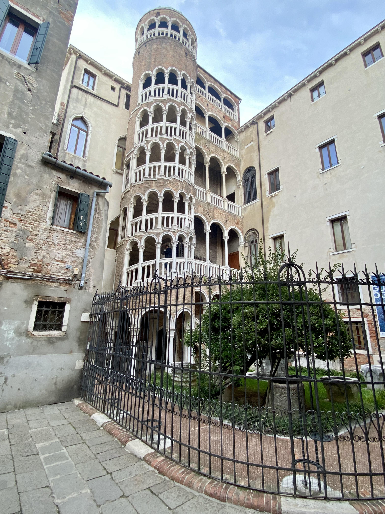
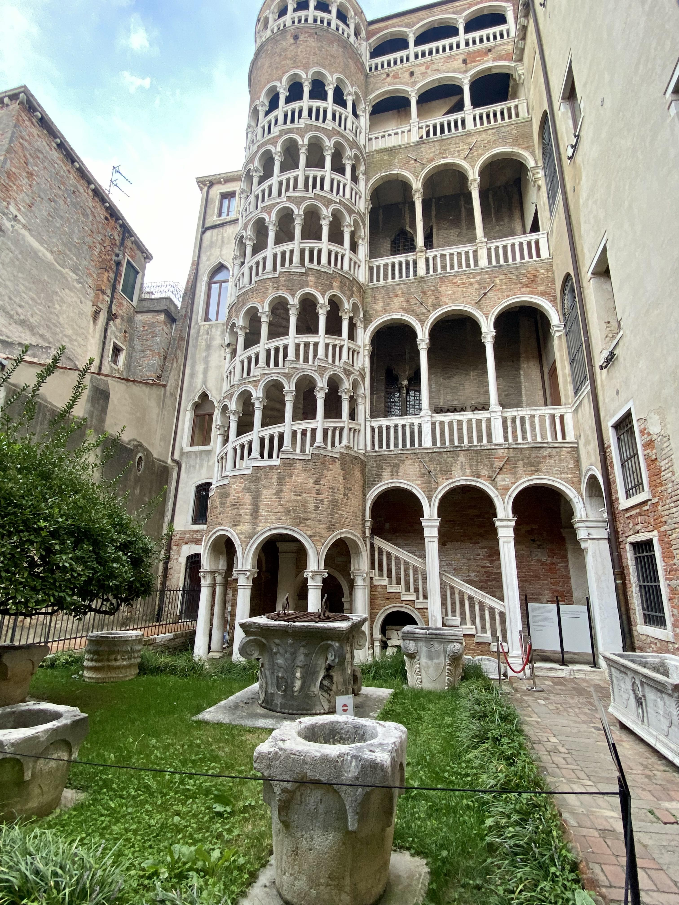

Se cammini lungo una stretta calle vicino a Campo Manin, raggiungerai un piccolo cortile con Palazzo Contarini e una bellissima scala esterna.
If you walk down a narrow alleyway close to Campo Manin (Manin Square), you will reach a tiny courtyard with Palazzo Contarini and a beautiful external stairway.

La scala a chiocciola è la Scala del Bovolo (la scala a guscio di lumaca), così chiamata per la sua curiosa forma.
The spiral stairway is the Scala del Bovolo (the snail-shell stairway), so called because of its curious snail-shell shape.

La scala fu costruita nel 1499 dal proprietario per poter raggiungere la sua camera da letto... a cavallo! Questo gioiello unico combina stili gotico e rinascimentale in un modo che non si vede da nessun'altra parte a Venezia.
The stairway was built in 1499 by the owner so that he could reach his bedroom… on horseback! This unique architectural gem combines Gothic and Renaissance styles in a way seen nowhere else in Venice.